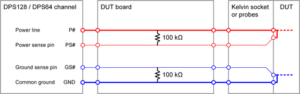

DPS128 / DPS64 recommendations for use
For safe handling of the DPS128 / DPS64 card and getting out the best performance follow the recommendations for designing the DUT board and setting up the test.
Layout recommendations
- Sense lines
Run sense the lines to the DUT.

Kelvin sockets or separate probes for the power / force lines and the sense lines are recommend to ensure that the force and sense lines are connected directly at the DUT.
NoteAdd 100 kΩ force to sense bypass resistors on the DUT board to protect against open loop.
For channels that are ganged on the DUT board, the bypass resistors are required once per gang. For ganged channels connected together on the DUT itself, the bypass resistors on the DUT board are required once per channel.
CAUTIONThe DPS128 / DPS64 channels feature integrated sense connection test units (a.k.a. Force Sense Check or Kelvin test unit) for both the power sense pin and the ground sense pin. These units provide the only way to check the connection of the sense lines at the DUT by applying a small test current. Bypass resistors with values much smaller than those recommended above prevent this sense connection test.
For bypass resistors with values much smaller than those recommended above, we recommend therefore, connecting normally closed solid-state relays in series to the bypass resistors. The normally closed relays should be opened only for performing the sense connection test.
For more information, refer to Kelvin test / sense connection test and Kelvin measurement in DPS128/DPS64 functionality and features.
- Capacitors
- For more information, refer to DPS128 / DPS64 capacitor requirements.
Functional changes
- Introduced in SmarTest 7.6.0 / 8.3.4